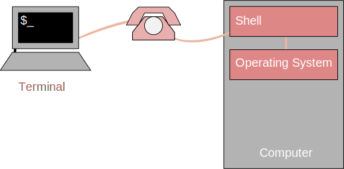
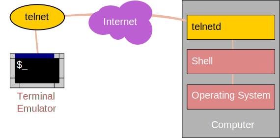
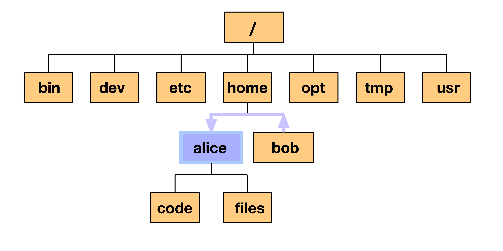
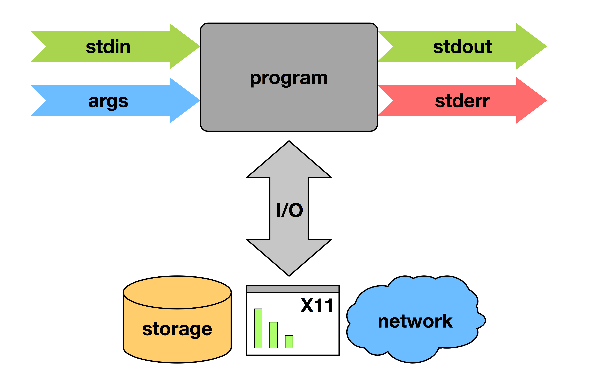

Close
Close

Introduction to the UNIX shell
Overview
Basic interaction with files and directories
- command line execution
- Unix directory and file basics
- file properties
File manipulation
- inspecting and editing files
- searching and filtering
- archiving and transfer over network
Scripting and workflows
- scripting techniques for building workflows
Access to Legion
Apply for an account: https://signup.rc.ucl.ac.uk/
Access is provided through the 4 login nodes connected to the external network:
legion.rc.ucl.ac.uk
Connecting to a computer: 1970s

Connecting to a computer: working from home

Connecting to a computer: over the Internet

Communication unencrypted!
Connecting to a computer: over the Internet

Communication encrypted!
Access to Legion
To access one of the login nodes (remotely) from a Unix machine:
ssh username@legion.rc.ucl.ac.ukLog on using UCL username/password
On Windows (e.g. Desktop@UCL) you can use PuTTY.
Access to Legion

Access to Legion

Basic interaction with files and directories
Command Prompt
[ccaaxxx@login06 ~]$
- Has the form
[<username>@<host name> <present directory>]$ - <user name> is the Unix user name (UCL user ID).
- <host name> is the name of the computer that you are accessing.
- <present directory> is the directory that the user is currently in.
- Takes commands typed after the prompt and executed by pressing return.
- Is usually controlled by a program called
bash.
Command Line Execution
[ccaaxxx@login06 ~]$ ls
Scratch
[ccaaxxx@login06 ~]$
lslists the contents of the directory~is an abbreviation for your "home directory"
Unix Directory Basics
[ccaaxxx@login06 ~]$ file ~
/home/ccaaxx: directory
[ccaaxxx@login06 ~]$
fileidentifies the file type~= /home/ccaaxxx - your home directory
Unix Directory Basics
/home/ccaaxxx: directory
/home: directory
/: directory
/home/ccaaxxx- the full or absolute path to your home directory
Directory Navigation
[ccaaxxx@login06 ~]$ pwd
/home/ccaaxxx
[ccaaxxx@login06 ~]$ cd /
[ccaaxxx@login06 /]$
cd- change directorypwd- full path to present working directory/- the "root" directory
Filesystem structure

Absolute path

/home/alice
Relative path

../alice
Hidden files and directories
[ccaaxxx@login06 ~]$ ls -a
. .. .bash_history .bash_logout
.bash_profile .bashrc .cshrc .emacs
Scratch .ssh
[ccaaxxx@login06 ~]$
Files starting with "." are hidden
.- Present working directory (in this case~)..- Directory above (in this case/home)
Everything is a file
[ccaaxxx@login06 ~]$ file .* *
.: directory
..: directory
.bash_history: ASCII text
.bash_logout: ASCII English text
.bash_profile: ASCII English text
.bashrc: Bourne-Again shell script text executable
.cshrc: C shell script text executable
.emacs: Lisp/Scheme program text (Emacs editor)
.ssh: directory (for secure shell)
Scratch: symbolic link to `/scratch/scratch/ccaaxxx'
*- All visible files.*- All invisible files
Everything is a file
Just to make the point:
[ccaaxxx@login06 ~]$ which ls
/bin/ls
[ccaaxxx@login06 ~]$ file /bin/ls
/bin/ls: ELF 64-bit LSB executable, AMD x86-64, version 1 (SYSV), for GNU/Linux 2.4.0,
dynamically linked (uses shared libs), stripped
/bin/lsis an executable file (!)whichshows the path to the argument, in this casels
Everything is a file
Just to make the point:
[ccaaxxx@login06 ~]$ file /dev/sda1
/dev/sda1: block special (8/1)
- Things in
/devare devices /dev/sda1is the first hard drive
Exercise:
Explore the / directory using ls, cd, ., .., pwd
If you feel lost, just execute
cdwith no arguments (orcd ~) and you will be returned to your home directory.cd -- will return you to the previous directory you were in.
Directory creation
[ccaaxxx@login06 ~]$ mkdir a_directory
[ccaaxxx@login06 ~]$ ls
a_directory Scratch
mkdir- create a directory
Directory creation
[ccaaxxx@login06 ~]$ mkdir -p a_directory/inside/the_other
[ccaaxxx@login06 ~]$ cd a_directory/inside/the_other
[ccaaxxx@login06 the_other]$ pwd
/home/ccaaxxx/a_directory/inside/the_other
mkdir -p- creates consecutive sub-directories
Touching a file
[ccaaxxx@login06 ~]$ touch a_file
[ccaaxxx@login06 ~]$ ls
a_directory a_file Scratch
touch- create or update the date of a file- This is not usually how files are created
Copying files
[ccaaxxx@login06 ~]$ cp a_file copy_of_a_file
[ccaaxxx@login06 ~]$ ls
a_directory a_file copy_of_a_file Scratch
cp- copy a file (or a directory tree)
Exercise:
Create and copy a directory tree. Use the command man cp for more information
File manipulation
Editing files
[ccaaxxx@login06 ~]$ nano a_file

nano- simple file editor
Nano

nano- simple file editor- Commands are along the botton of editor screen
^- shorthand for control key
Editors
There are many other (better but more complex) text file editors on the system such as vim, emacs and nedit.
Use the one you feel most comfortable with (if you don't know any, use nano (or nedit if you have X-Windows)).
Moving/Renaming files and directories
[ccaaxxx@login06 ~]$ mv a_file control.in
[ccaaxxx@login06 ~]$ ls
a_directory control.in Scratch
[ccaaxxx@login06 ~]$ mv control.in a_directory
[ccaaxxx@login06 ~]$ ls a_directory
control.in inside
mv- rename or move a file/directory
Deleting files and directories
[ccaaxxx@login06 ~]$ rm a_directory/control.in
[ccaaxxx@login06 ~]$ rm a_directory
rm: cannot remove `a_directory/': Is a directory
[ccaaxxx@login06 ~]$ rm -r a_directory
[ccaaxxx@login06 ~]$
rm- remove a filerm -r- remove a directory and all its contents- remove operations are irreversible!
- The
-iargument is highly recommended
Exercise:
In ~/Scratch...
- Create the following directory tree:
work
work/input_data
work/results
work/program
Create the file
input.txtwith some random lines in it.Move the file to
input_dataand rename it in the same command tocontrol01.txtCreate the directory tree in one line only:
work/experiment/results/reportDelete all directory trees created in one single command without explicit reference to any of the directory and file names except
work.
File properties
[ccaaxxx@login06 ~]$ ls -l
total 8
drwxr-xr-x 2 ccaaxxx rcops 4096 2009-12-08 07:31 a_directory
-rw-r--r-- 1 ccaaxxx rcops 0 2009-12-08 07:31 a_file
drwxr-xr-x 2 ccaaxxx rcops 4096 2009-12-08 06:50 Scratch
ls -l- list file properties (details)
File properties
drwxr-xr-x 2 ccaaxxx rcops 4096 2009-12-08 07:31 a_directory
drwxr-xr-x - File type and permissions
2 - Number of links to the file
ccaaxxx - User name of file owner
rcops - Group to which the file belongs
4096 - size of file in bytes
2009-12-08 - last change data
07:31 - last change time
a_directory - file name
ls -l- list file properties (details)
File permissions
There are three user security classifications that apply to the ownership of a file:
- user: the individual user that has ownership of the file
- group: a group of users to which that user belongs
- others: all other users (not owner or in that group)
Each of these has three file access classifications:
- read: permission to read the file
- write: permission to write the file
- execute: permission to execute (run) the file
File permissions
drwxr-xr-x has four fields:
| code | meaning |
|---|---|
| d | - the file is a directory |
| rwx | - the user has read, write and execute access |
| r-x | - the group has read and execute access |
| r-x | - others have read and execute access |
| Permissions | read | write | execute |
|---|---|---|---|
| rwx | yes | yes | yes |
| rw- | yes | yes | no |
| r-- | yes | no | no |
| r-x | yes | no | yes |
| --- | no | no | no |
File permissions
[ccaaxxx@login06 ~]$ ls -l
...
drwxr-xr-x 2 ccaaxxx rcops 4096 2009-12-08 07:31 a_directory
...
[ccaaxxx@login06 ~]$ chmod go-rx a_directory
[ccaaxxx@login06 ~]$ ls -l
...
drwx------ 2 ccaaxxx rcops 4096 2009-12-08 07:31 a_directory
chmod- change the permissions of a file
File permissions
How did the permissions definition go-rx work?
chmod [ugoa][+/-][rwx] file
ugoa - user, group, other, all
+/- - add/remove
rwx - read, write, execute
If you don't specify u,g,o or a, default is ALL (so chmod +x makes file executable for everyone).
chmod- change the permissions of a file
Exercise:
Change the permission of a full directory tree with one single
chmodcommand (look in the man pages for more information).When typing the command
ls /sh, press the tab key after typing/sh. What happens?
Inspecting files
[ccaaxxx@login06 ~]$ cd /shared/ucl/apps/examples/openmp_pi_dir
[ccaaxxx@login06 examples]$ less openmp_pi.f90
less- visualise a text file:- use arrow keys
- page up/page down
- search by typing "/"
- quit by typing "q"
Other file inspection tools
| command | use |
|---|---|
head |
- visualise the first 10 lines of a file |
tail |
- visualise the last 10 lines of a file |
cat |
- concatenate files provided as input and dump the result to stdout |
sdiff |
- visualise and compare two files side-by-side |
(Use e.g. man head to see more information on the head command)
Filtering directory listings
[cccaaxxx@login06 ~]$ ls /shared/ucl/apps/BLAST/install | grep blast
blastall
blast-nr-1.out
blast-pdb-1.out
- grep - prints lines containing a string. Also searches for strings in text files.
Searching for strings in files
[cccaaxxx@login06 ~]$ grep SWAP /shared/ucl/apps/BLAST/install/test.faa
SWGEGCGLLHNYGVYTKVSRYLDWIHGHIRDKEAPQKSWAP
- grep - prints lines containing a string. Also searches for strings in text files.
Links
Created with "ln"
Two types:
- "Hard" - indistinguishable from files
- "Soft" (or "Symbolic") - like a shortcut
Hard links
Inode table keeps track of hard links
Deleting a file = "unlinking" it
Can only be used inside a single file system
Soft links
- Shortcut, e.g.
[cccaaxxx@login06 ~]$ ln -s ~/some_project/2012/part531 ~/current_project
[cccaaxxx@login06 ~]$ ls -l ~
lrwxr-xr-x 1 ccaaxxx staff 11 10 Oct 17:56
current_project -> /home/ccaaxxx/some_project_2012/part531
Soft links
Can use relative or absolute paths!
Create using absolute paths to make sure they go where you want
"Scratch" in your home directory is a soft link
- Makes it easier to access your scratch area
Archiving and compression
[ccaaxxx@login06 Scratch]$ tar -zcvf work.tgz work
work/
work/program/
work/calculations/
work/calculations/control.in
work/workfile
[ccaaxxx@login06 Scratch]$ ls
work.tgz work
- tar -zcvf - archives and compresses directory trees and files
- c - create archive
- z - compress
- v - verbose
- f - in the following file
Extracting files from a compressed archive
[ccaaxxx@login06 Scratch]$ ls
work.tgz
[ccaaxxx@login06 Scratch]$ tar -zxvf work.tgz
work/
work/program/
work/calculations/
work/calculations/control.in
work/workfile
[ccaaxxx@login06 Scratch]$ ls
work.tgz work
- tar -zxvf - extracts and uncompresses directory trees and files
- x - extract archive
- z - uncompress
- v - verbose
- f - from the following file
Transferring files across a network
From Legion:
[ccaaxxx@login06 Scratch]$ scp work.tgz ccaaxxx@socrates.ucl.ac.uk:~/
...
Password:
work.tgz 100% 340 0.3KB/s 00:00
To Legion:
[ccaaxxx@login06 Scratch]$ scp ccaaxxx@socrates.ucl.ac.uk:~/work.tgz .
...
Password:
work.tgz 100% 340 0.3KB/s 00:00
Note: remote machine (in this case Socrates) must be running SSH server. So, from your destop:
[you@desktop ~]$ scp work.tgz ccaaxxx@login05.external.legion.ucl.ac.uk:Scratch
[you@desktop ~]$ scp ccaaxxx@login05.external.legion.ucl.ac.uk:Scratch/work.tgz .
- scp - securely copy files across a network
Scripting and workflows
Output redirection and piping
Two very important concepts:
- Standard Output (stdout) - default destination of a program's output. It is generally the terminal screen.
- Standard Input (stdin) - default source of a program's input. It is generally the command line.
Output redirection and piping
[ccaaxxx@login06 ~]$ ls /home > ls_home.txt
- > - redirect stdout to a file
[ccaaxxx@login06 ~]$ ls /home | less
- | "pipe" stdout to stdin of a command
Output redirection and piping

Output redirection and piping

Output redirection and piping
ls -l

Output redirection and piping
ls -l > list

Output redirection and piping
ls -l | grep name > list

Output redirection and piping
You can chain any number of programs together to achieve your goal:

This allows you to build up fairly complex workflows within one command-line.
Shell scripting
#!/bin/bash
# This is a very simple hello world script.
echo "Hello, world!"
- #! - tells the shell that it should use /bin/bash as the interpreter
- # - a comment (ignored by /bin/bash)
- echo - a command that prints arguments to stdout
Exercise:
Create a "Hello world"-like script using command line tools and execute it.
Copy and alter your script to redirect output to a file using >.
Alter your script to use >> instead of >. What effect does this have on its behaviour?
Exercise Solutions:
. not present in the environment variable $PATH:
[ccaaxxx@login06 ~]$ hello_world.sh
bash: hello_world.sh: command not found
File permissions not set to executable by user:
[ccaaxxx@login06 ~]$ ./hello_world.sh
bash: ./hello_world.sh: Permission denied
using ./ and chmod u+x:
[ccaaxxx@login06 ~]$ ./hello_world.sh
Hello World!
Exercise:
- Use
seq 1 75 > numbers.txtto generate a file containing a list of numbers. Use thehead,tail, andlesscommands to look at it, then usegrepto search it for a number.
Environment Variables
[ccaaxxx@login06 ~]$ variable='string'
[ccaaxxx@login06 ~]$ other_variable=$variable
Defined and used within a shell script only.
No spaces around the assignment symbol "
=".$means "the value assigned to the following variable".
Global Environment Variables
- defined within a shell and also in scripts called from the shell
[ccaaxxx@login06 ~]$ export ENV_VARIABLE='value'
Exercise
- Using two nested scripts, show that the value of an exported variable in the environment where you launch the scripts, propagates all the way down to the second script.
Updated process diagram

Special environment variables
What is the output of this command?
[ccaaxxx@login06 ~]$ echo $PATH
Note the structure: <path1>:<path2>:<path3>
PATH is an environmental variable which Bash uses to search for commands typed on the command line without a full path.
Exercise: Use the command env to discover more.
Variables in shell scripts
#!/bin/bash
# This is a very simple hello world script
message='Hello World!'
echo $message
echo ${message}
| symbol | purpose |
|---|---|
| #! | tells the shell that this is the interpreter (/bin/bash) |
| # | followed by a blank character is a comment line |
| message | variable to which the string 'Hello World!' is assigned |
| echo | prints to screen the contents of the variable "$message" |
Command line arguments
Variables can also be defined through the command line
[ccaaxxx@login06 ~]$ ./script.sh arg another
Within the script:
$1 contains "arg"
$2 contains "another"
Exercise: Using $1 and $2, write a script that print both variables to the screen.
Storing output of commands in variables
Run commands inside $( ) and assign the wrapped command to a variable
[ccaaxxx@login06 ~]$ ls
a_directory a_file Scratch
[ccaaxxx@login06 ~]$ dir_contents=$( ls )
[ccaaxxx@login06 ~]$ echo $dir_contents
a_directory a_file Scratch
Basic arithmetic
[ccaaxxx@login06 ~]$ two=2
[ccaaxxx@login06 ~]$ result=$(( $two + 2 ))
[ccaaxxx@login06 ~]$ echo $result
4
[ccaaxxx@login06 ~]$
- Integer arithmetic can be done inside
$(( ))- + addition
- - subtraction
- / integer division
- * multiplication
The for loop
#!/bin/bash
for i in first second third
do
echo $i iteration
done
echo finished!
- Interpreter definition line.
- Definition of the loop in which the variable
iwill take the values "first", "second" and "third" in that order. - Start the loop iteration definition.
- Print the string contained by
iand the string iteration, separated by a space. - End the loop definition.
- Print some useful information to the screen.
The for loop using an iterator
#!/bin/bash
for (( i=1 ; i<=5 ; i++ ))
do
echo iteration$i
done
echo finished!
(Note how it is possible to create number labels)
Exercise:
Write a script that creates five directories named calculation_?, where ? is a number.
Formatted sequences based on numbers
[ccaaxxx@login06 ~]$ seq 1 5
1
2
3
4
5
seq- generates sequences based on numbers
Formatted sequences based on numbers
[ccaaxxx@login06 ~]$ seq 1 2 9
1
3
5
7
9
seq- generates sequences based on numbers
Formatted sequences based on numbers
[ccaaxxx@login06 ~]$ seq -f %03g 1 2 9
001
003
005
007
009
g- the number of significant digits is 30- in front of 3 indicates that the number is padded with zeros if smaller than 100.%- start the format definition for the number (place the number)
The for loop revisited
#!/bin/bash
for i in $(seq -f %03g 1 4)
do
echo creating directory calculation$i
mkdir calculation$i
done
echo finished!
You can now create directory trees and files automatically!
Generating scripts with scripts
cat <<EOF > child_script.sh
#!/bin/bash
echo The child script says Hi!
EOF
- <<EOF - concatenates the text until the string "EOF", redirecting it to cat
- > child_script.sh - redirects the output of cat to child_script.sh.
- Indenting the top line will break the
#!.
Exercise:
write a
parent_script.shthat creates and executes thechild_script.shwrite a
parent_script.shthat creates and executes 10 differentchild_script.shthat print out their individual number
Process control
A process is:
- foreground when it is interacting with the user via an interface (usually the shell).
- background if it is running without interacting with the user.
- suspended if it is neither interacting nor running.
To run a process in the background: add the symbol
&at the end of the command line.To send a foreground process to the backgound: press Ctrl+z and then execute the command
bgTo bring a background process to the foreground: execute the command
fg
Which processes are running?
Use the commands top and ps
[ccaaxxx@login06 ~]$ ps aux
| Field | contents |
|---|---|
| USER | - the user name |
| PID | - the process ID |
| %CPU | - the percentage of CPU time being used |
| %MEM | - the percentage of Memory being used |
| VSZ | - the size of Virtual memory |
| RSS | - the size of real memory |
| TTY | - the virtual teletype terminal this proces is attached to |
| STAT | - the state of the process (see "man ps") |
| START | - the time when the process was started |
| TIME | - the time the process has been running |
| COMMAND | - the command that was called |
And:
[ccaaxxx@login06 ~]$ ps xjf
Why have we been showing you this?
Tomorrow, we will be talking about how to submit your workloads to Legion
The scripts you submit are bash shell scripts with some special comments read by the scheduler at the top.
#!/bin/bash -l
#$ -S /bin/bash
#$ -l h_rt=0:30:0
#$ -l mem=1G
#$ -N Analysis
#$ -P <your_project_id>
#$ -wd /home/<your_UCL_id>/Scratch/output
echo "Copying input files."
cd $TMPDIR
cp -R ~/inputdata .
echo "Analysing data."
~/bin/analyse -i inputdata/exp.in > exp.out.$JOB_ID
echo "Copying data back."
cp exp.out.$JOB_ID ~/Scratch/output
echo "Done."
More information
Many topics not covered here:
- if statements
- case switches
- defining functions
- and many, many more...
Google and the
manpages are your friends!